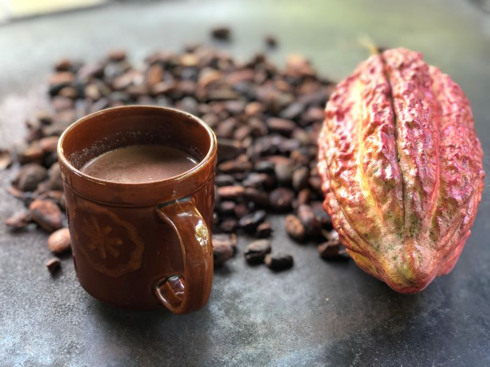
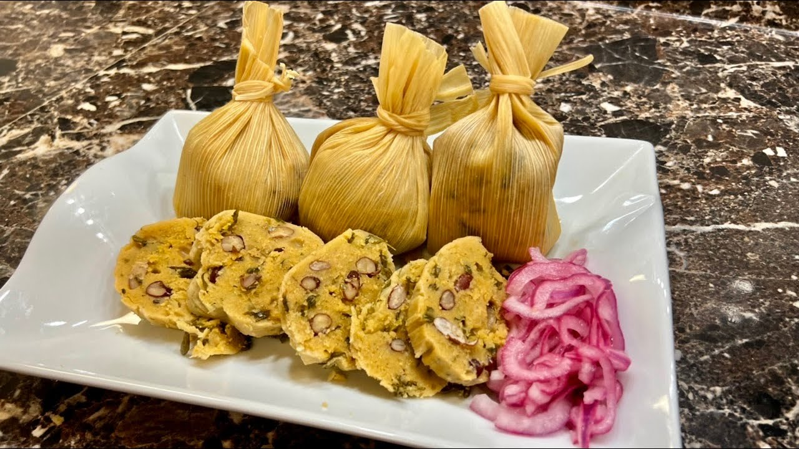
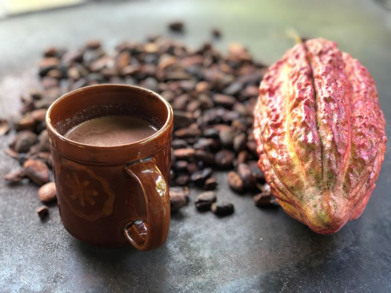
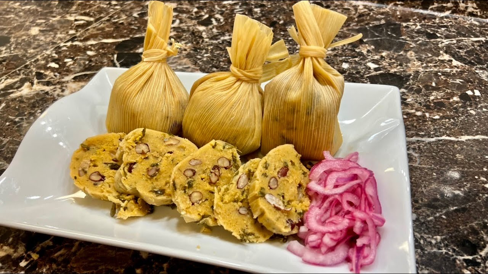

Descubre la Magia de Copán Ruinas
¡Viaja con nosotros y sumérgete en la historia viva de Honduras! Explora las enigmáticas ruinas mayas, admira las guacamayas en libertad y siente la energía ancestral de este tesoro. Cada paso que das ayuda a conservar nuestra cultura y naturaleza.
 


